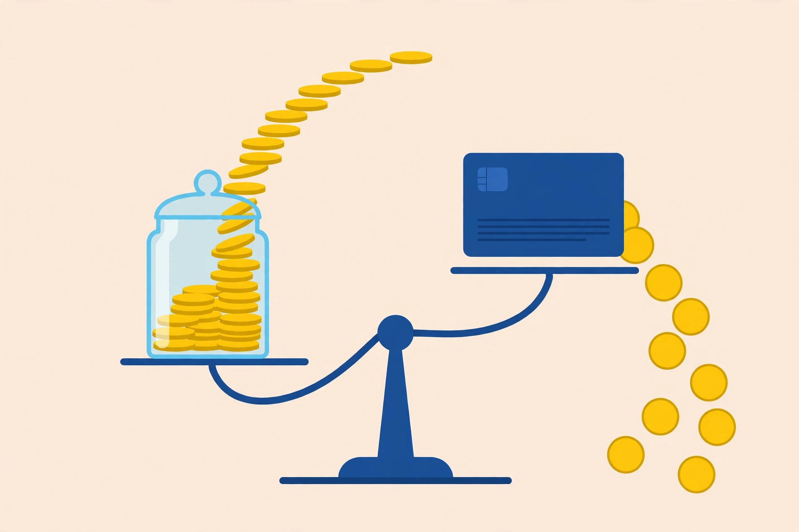

How interest works for teens: earning it and paying it

Interest is a rental price for money, and it runs in both directions. Keep money in a savings account and the bank pays a small rent for using it. Carry a balance on a credit card and the cardholder pays a much larger rent for using the issuer's money. The arithmetic underneath is identical — a percentage, applied to a balance, over time — which is exactly why the same word can feel like a bonus in one account and a trap in another. This guide explains simple and compound interest with small, clearly labelled hypothetical examples at teen scale, then contrasts savings interest with credit interest under Canadian rules from the Financial Consumer Agency of Canada (FCAC), checked on October 17, 2026.
General information only — this article is not financial advice. Every rate in the worked examples below is a hypothetical round number chosen to make the arithmetic easy to follow; no example is an offer from any bank or card issuer. For specific financial questions, talk to a qualified professional.
The three ingredients in every interest calculation
Every interest figure, earned or paid, comes from three ingredients. The principal is the starting balance — the deposit or the amount owed. The rate is the percentage charged or paid per year. The time is how long the balance sits there. Change any one ingredient and the result changes, which is why two accounts advertising the same rate can produce different outcomes, and why a balance left alone for years behaves so differently from a balance cleared in a month. A fourth detail — how often interest is calculated and added — separates simple interest from compound interest, and it is the detail that matters most over long periods.
Simple interest: the percentage always applies to the original amount
Some products pay simple interest, which the Government of Canada's financial toolkit describes plainly: interest is calculated on the original amount only. The formula is principal × rate × time. Here is the arithmetic at teen scale, as a labelled hypothetical. Suppose $200 sits in a product paying simple interest at a hypothetical 5 percent per year. Each year pays 5 percent of the original $200, which is $10. After one year the balance is $210, after three years it is $230, and after five years it is $250. The payment never grows, because the interest itself never joins the balance that earns interest. Simple interest is predictable and easy to check with a phone calculator — and its flat line is the baseline that makes compound interest visible.
Compound interest: interest starts earning (or costing) interest
Savings accounts normally pay compound interest: interest on the interest previously paid into the account. In practice, interest earned on savings accounts in Canada is usually calculated on the balance at the end of each day and paid monthly, so it compounds monthly — once a month's interest lands in the account, the next month's interest is calculated on a balance that includes it. The standard formula is A = P × (1 + r/n) raised to the power of n × t, where P is the principal, r is the annual rate, n is how many times interest compounds per year, and t is the number of years.
Run the same hypothetical $200 at the same hypothetical 5 percent, but compounded once a year. Year one pays $10, taking the balance to $210 — identical to simple interest. Year two pays 5 percent of $210, which is $10.50, taking the balance to $220.50. Year three pays 5 percent of $220.50, about $11.03, for $231.53. After five years the compound balance is about $255.26 against the simple-interest $250. The gap after five years is only about $5 — honest arithmetic matters here, because at teen balances and short horizons, compounding is a nudge, not a miracle. The Government of Canada toolkit makes the same point from the other direction: interest adds to savings, but regular contributions do far more of the work. A published calculator example at a larger scale shows the pattern clearly: $5,000 at 2 percent compounded annually earns $100 in year one, $202 in total by year two, and $306.04 by year three, versus exactly $100, $200, and $300 with simple interest. The compounding edge is real, and it grows with time and balance — it just starts small.
One table: the same math in both directions
| Earning interest (savings) | Paying interest (credit) | |
|---|---|---|
| Who pays whom | The bank pays the saver for keeping money deposited | The cardholder pays the issuer for borrowing |
| Typical mechanism in Canada | Calculated on the daily balance, paid monthly, so it compounds monthly | Charged when the statement balance is not paid in full by the due date, and continues until the balance is paid in full |
| The protection or the catch | Withdrawing interest shrinks the base the next calculation uses | A minimum 21-day grace period applies to purchases at federally regulated issuers — but it does not apply to cash advances, cash-like transactions, or balance transfers |
| Illustrative rates from FCAC guidance | Rates vary by account and are not quoted here; check the actual account terms | FCAC gives 19 percent on regular purchases and 22 percent on cash advances as examples, and notes specialized and retail card rates may be higher |
Read the rate row twice. Even without quoting any real savings rate, the structural contrast is obvious: borrowing rates in the FCAC examples are large double-digit percentages applied to money owed, while savings interest is a modest percentage applied to money kept. A balance working in the wrong direction at a card rate grows far faster than a similar balance working in the right direction at a savings rate. That asymmetry — not any single formula — is the most useful thing a teen can carry into age 18, when a first credit card becomes available.
A hypothetical month on a card, in slow motion
Here is the paying side at teen scale, again as labelled hypothetical arithmetic with no issuer named. Suppose a $300 purchase is put on a card and the statement balance is not paid in full by the due date. Using a hypothetical 20 percent annual rate for clean arithmetic, one month of interest on $300 is roughly $300 × 20 percent ÷ 12, about $5. That $5 is then added to what is owed, so the next month's interest is calculated on about $305, not $300 — compounding working against the cardholder. Five dollars sounds trivial, and on $300 for one month it is. The danger is the pattern, not the first month: a balance that stays, plus new purchases added to it, plus interest charged on a growing base, month after month. The FCAC rule underneath the example is the part to memorize: interest is payable when the balance is not paid in full by the due date, and it continues until the balance is paid back in full. Paying the full statement balance inside the grace period is not a discount trick — it is the difference between borrowing at zero percent and borrowing at the card's full rate.
Cash advances deserve a separate warning, because they break the pattern teens expect. The grace period that protects purchases does not apply to cash advances, cash-like transactions, or balance transfers. Money taken as a cash advance starts in the interest-charging category immediately, typically at the higher of the card's rates. A card is a payment tool with an expensive loan attached; the loan half has different rules from the payment half.
A decision framework for the first account and the first card
Definitions only help if they change a decision. For a teen approaching 18, the interest math supports four rules, in this order. First, keep savings where interest compounds and withdrawals are slightly inconvenient. The compounding benefit is modest at small balances, so the account's real job is separating savings from spending money; interest is a small reward for leaving the base intact. Second, add contributions before chasing rates. At a $200 balance, doubling the balance by saving another $200 beats any plausible rate difference between accounts — the toolkit's point that contributions outrun interest. Third, treat a credit card as a payment method, never as an income supplement. The full statement balance, paid by the due date, every month, keeps the grace period working; anything less switches on the most expensive interest most households ever pay. Fourth, compare any borrowing by its rate and compounding before its rewards. Points and cashback are percentages of spending; carried-balance interest is a percentage of debt, charged the other way, and it is almost always the bigger number.
Why no numbered procedure here? This topic is a concept explainer rather than a fix or a how-to: there is no device to configure and no broken process to repair. The framework above is the actionable part — four checks to run before opening an account or accepting a card offer — and the FAQ below answers the questions the math usually raises.
Frequently asked questions
Is compound interest always better than simple interest? Only when receiving it. Compounding pays more to a saver and charges more to a borrower, because in both cases interest joins the balance. The word to check is direction, not the label.
Why did a savings account pay only a few cents? Because all three ingredients were small: a small principal, a modest rate, and one month of time. The statement is not wrong — it is the formula working honestly at teen scale. Larger balances built by regular deposits are what make the cents become dollars.
Does paying the minimum on a card avoid interest? No. Interest is charged when the full balance is not paid by the due date, and it continues until the balance is paid in full. A minimum payment keeps the account current; it does not stop interest on the remainder.
General information only — this article is not financial advice. For specific financial questions, talk to a qualified professional.